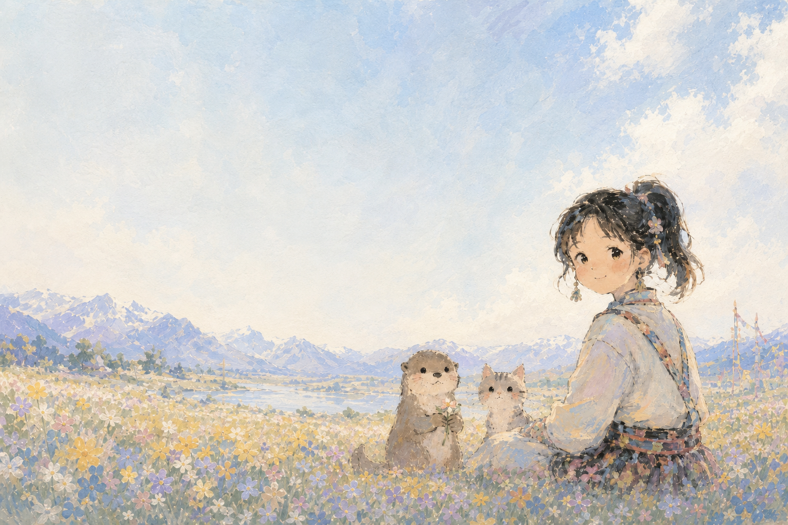

一个对人、技术与社会如何共同塑造未来充满好奇的成长者。
我本科读哲学，现在在读 AI 相关的硕士。过去三年，我主要做管理咨询和 B 端项目交付，接触组织、流程、业务和真实用户问题。

我本科读哲学，现在在读 AI 相关的硕士。过去三年，我主要做管理咨询和 B 端项目交付，接触组织、流程、业务和真实用户问题。
哲学本科。AI 相关硕士在读，关注技术与人文的交叉。
3 年管理咨询与 B 端项目交付经验，习惯把复杂信息抽丝剥茧，结构化分析并推动落地。
正在向 AI 产品与 FDE 方向转型，关注职业模拟游戏、以人为中心的 AI 评测，以及 AI 与哲学的交叉。
Selected work across AI, product, and tools—
building with curiosity and care.